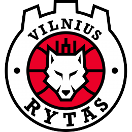

Vilniaus „Rytas“

Įkurtas:
1963 metais
Vyriausias treneris:
Giedrius Žibėnas
Komandos sudėtis:
- #2 Margiris Normantas
- #4 Reigarvius Williams
- #5 Arnas Adomavičius
- #7 Gytis Radzevičius
- #8 Vaidas Kariniauskas
- #10 Lukas Uleckas
- #18 Mindaugas Girdžiūnas
- #21 Tanner Leissner
- #25 Ivan Buva
- #27 Adas Šimonis
- #44 Kenneth Smith
- #51 Arnas Butkevičius
- #81 Rokas Jocius
Nuoroda į oficialią svetainę >>>
<<< Grįžti į pagrindinį puslapį